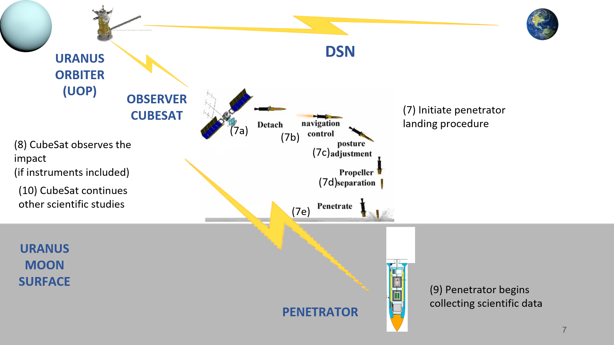
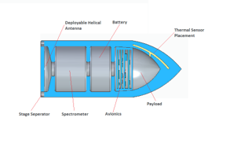
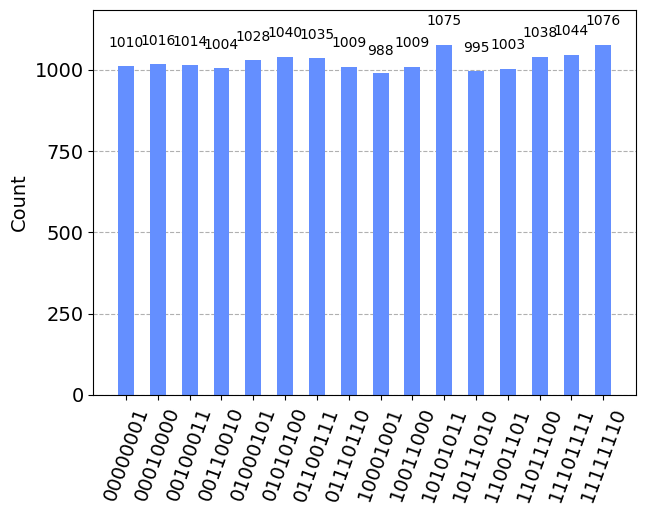
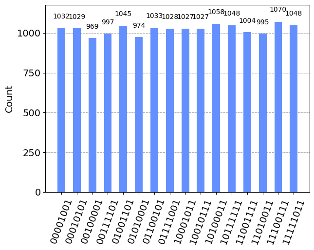
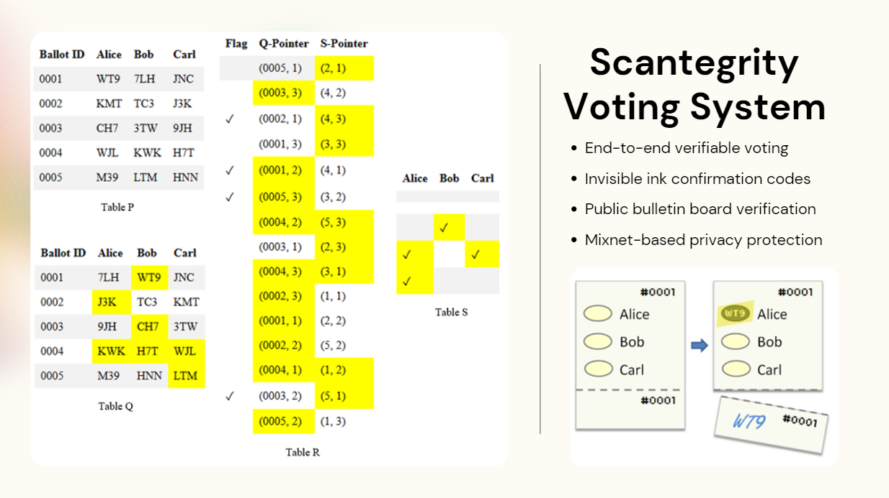
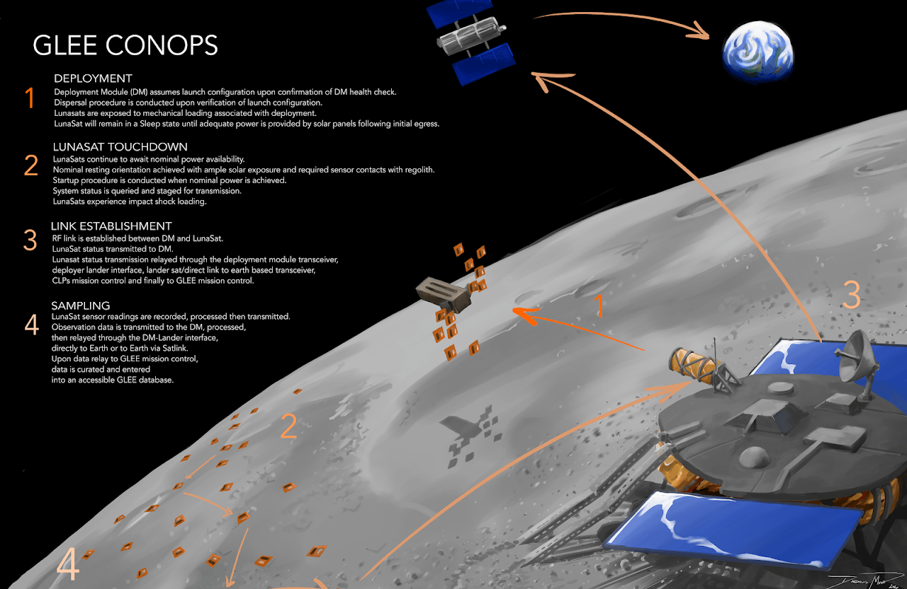
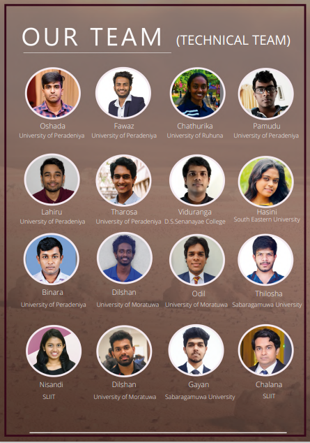

Exploring how quantum key distribution protocols can revolutionize secure communications between Earth and space missions, ensuring data integrity across vast distances using SEDJ and SESP protocols.
Read More →VIDURANGA
SHENAL
LANDERS
Undergraduate • Researcher • Inventor
A highly motivated student with strong leadership qualities who is constantly seeking new challenges to push the limits of his knowledge. Actively seeking for academic opportunities in quantum computing and astronautics.
About Me
Introduction
I am currently pursuing my undergraduate degree in Computer Science at the University of Colombo School of Computing. I am a huge fan of space exploration, quantum computing and cryptography.
I am a founder and leader of several Sri Lankan student research teams involved in space-related research. I currently serve as a project lead at Nexus Aurora Corp, DE, USA, working on the project Soil Penetration Darts, which has the potential to significantly lower the cost of Lunar sampling. I am also leading the Lunarbot team, serve as the Technical Lead of Taprobane Rover project at SEDS Sri Lanka and am the National Point of Contact for the Space Generation Advisory Council representing Sri Lanka.
Beyond space research, I am actively involved in quantum computing research, developing two novel Quantum Key Distribution protocols and a quantum e-voting system. I've also worked on a generalization of the Collatz semi-group which indirectly led me to create numerous amazing fractal arts.
My dedication to innovation has earned several recent accomplishments. Our team won first place in the Overall Category of NASA's GLEE Mission's Lunar Deployment Challenge (2024), secured multiple achievements in coding and computer science related competitions, and published multiple research papers and book chapters. I was also honored with the Faculty Award from the University of Colombo School of Computing (2024) and the Asia Pacific Space Leader Award from the Space Generation Advisory Council (2023).
In addition to research and competitions, I am actively involved in educational outreach and volunteer activities. As the NPoC for SGAC and Divisional Manager of SEDS Sri Lanka's Robotics and Rover Division, I work to promote space education and technology development in Sri Lanka.
Recent Honors and Awards
- Faculty Award - University of Colombo School of Computing (2024)
- Asia Pacific Space Leader Award - Space Generation Advisory Council (2023)
- Keynote Speaker - 15th International Conference on Global Security, Safety & Sustainability (2023)
- Winner (Overall Category) - Lunar Deployment Challenge, NASA's GLEE Mission (2024)
Recent Publications
- Quantum e-voting system using QKD and enhanced quantum Oracles - 16th Annual International Conference on Global Security, Safety and Sustainability (2024)
- Economical Lunar Sample Return Mission with Soil Penetration Darts - 75th International Astronautical Congress (2024)
- Quantum Revolution in Space: Enhancing Space Technology - Space Law Principles and Sustainable Measures, Space Law & Policy Series, Springer (2024)
- Quantum Technologies for Space and Aerial Vehicles - Space Governance, Space Law & Policy Series, Springer (2024)
Connect With Me
Research Metrics
11
Total Citations
Google Scholar + ResearchGate
9
Publications
Conferences + Books Chapters
2
H-Index
Combined Platforms
2
Patents
Sri Lankan IP Office
Last updated: August 2025 | Combined statistics from Google Scholar and ResearchGate
Published Research Papers
Economical Lunar Sample Return Mission with Soil Penetration Darts
75th International Astronautical Congress (2024)
This paper presents an innovative approach to lunar sample return missions using Soil Penetration Darts (SPDs) technology. The SPD system significantly reduces mission costs while enabling deep subsurface sampling capabilities. The research demonstrates how planetary penetrators can revolutionize lunar exploration by providing access to pristine samples from depths previously unattainable by conventional drilling methods.
HOPE-ROAR Mission: Uranian Moons Impactor
74th International Astronautical Congress (2023)
The HOPE-ROAR mission presents an innovative in-depth study of Uranian satellites through impactor technology. This research outlines a comprehensive mission design for exploring the icy moons of Uranus using CubeSat-based impactors, providing unprecedented insights into the composition and structure of these distant worlds.
Soil Penetration Darts (SPDs) for Deep Soil Sampling
73rd International Astronautical Congress (2022)
This foundational paper introduces the concept of Soil Penetration Darts for deep planetary soil sampling. The research explores the engineering challenges and solutions for developing high-velocity penetrators capable of collecting samples from depths of several meters below planetary surfaces, with applications for Mars, Moon, and asteroid exploration.
Mercury Sample Return Mission Design
73rd International Astronautical Congress (2022)
This paper details the design of an innovative Mercury sample return mission utilizing cutting-edge technologies and systems. The research addresses the extreme thermal and radiation challenges of Mercury exploration while proposing cost-effective solutions for sample collection and return to Earth for detailed analysis.
A Self Adapting Wheel System for Space Exploration Rovers
72nd International Astronautical Congress (2021)
This research presents the Self-Adapting Wheel System (SAWS), an innovative technology that autonomously adjusts wheel grousers based on terrain conditions. The system enhances rover mobility across diverse planetary surfaces by optimizing traction in real-time, significantly improving mission success rates for planetary exploration.
Symmetrically Entangled Quantum Oracles for QKD
ResearchGate Preprint (2024)
This work introduces novel Quantum Key Distribution protocols based on symmetrically entangled Deutsch-Jozsa oracles. The research demonstrates enhanced security features through symmetric entanglement, offering both semi and fully symmetrical approaches that significantly improve quantum cryptographic communication security.
Book Chapters
Quantum Revolution in Space: Enhancing Space Technology
Space Law Principles and Sustainable Measures, Springer (2024)
This book chapter explores the transformative potential of quantum technologies in space applications, examining how quantum computing, communications, and sensing can revolutionize space exploration, satellite operations, and interplanetary missions while addressing regulatory and sustainability challenges.
Quantum Technologies for Space and Aerial Vehicles
Space Governance, Springer (2024)
This chapter investigates the integration of quantum technologies into space and aerial vehicle systems, covering quantum sensors, quantum communication networks, and quantum computing applications for autonomous navigation, secure communications, and advanced mission planning capabilities.
Planetary Penetrators for Space Mining
Space Mining Legality, Springer (2024)
This chapter examines the role of planetary penetrators in space mining operations, addressing technical capabilities, legal frameworks, and economic implications of using penetrator technology for asteroid and planetary resource extraction while considering sustainable mining practices.
Conference Presentations
Quantum e-voting system using QKD and enhanced quantum Oracles
16th International Conference on Global Security, Safety & Sustainability (2024)
This presentation introduces Quantegrity, a quantum-enhanced e-voting system that combines traditional Scantegrity voting methods with novel quantum key distribution protocols based on symmetrically entangled oracles, ensuring unprecedented election security and voter privacy.
Research in Astronautics
Soil Penetration Darts
Deep Lunar Sampling Technology
Revolutionary planetary penetrator for collecting soil samples from lunar surface's deep layers, developed with Nexus Aurora Corp. Presented at 73rd & 75th IAC.
SAWS Wheel System
Self-Adapting Space Technology
Innovative wheel system that autonomously adjusts grousers for optimal traction on various planetary terrains. Sri Lankan Patent LK21653, tested in Arctic conditions.
Mercury Sample Return
SGAC Mission Design
Mission design for sample return from Mercury under SGAC's ACHIEVED Initiative. Structures and thermal subsystem lead for innovative spacecraft design.
HOPE Mission
Uranian Moon Exploration
Co-led international team designing CubeSat mission to Uranian moons under SGAC. Innovative in-depth study of Uranian satellites with impactor technology.
Balloon Drones
Novel Space Technology
Novel concept combining expandable helium balloon with CubeSat spacecraft to reduce costs for small-scale planetary missions. SEPG Dream Mission shortlisted.
Research in Mathematics
Collatz Generalization
Mathematical Research
Different approach for generalization of the Collatz Conjecture, creating various patterns and mathematical insights through time sequence graphs.
Prime Distribution
Pattern Analysis
Research on patterns among intervals between prime numbers, establishing linear connections with interval sizes and prime counts.
Research in Quantum Computing
SEDJ QKD Protocol
Quantum Cryptographic Innovation
Novel Quantum Key Distribution protocol based on Symmetrically Entangled Deutsch-Jozsa algorithm with enhanced security features. Preprint published on ResearchGate.
SESP QKD Protocol
Simon's Oracle Based QKD
Novel Quantum Key Distribution protocol using Symmetrically Entangled Simon's Oracle with semi and fully symmetrical entanglement approaches.
Quantegrity
Quantum e-Voting System
Quantum-enhanced e-voting system combining Scantegrity methodology with SEDJ QKD protocol for unprecedented election security. Presented at ICGS3-24 Conference.
Space Related Projects
GLEE Mission
NASA Artemis Challenge
Leading development of LunaSats for NASA's Global Lunar Expedition for Everyone, including winning design for Lunar Deployment Module (L-SPyDer) - Overall Category Winner.
Taprobane Rover
Sri Lanka's First Mars Rover
Technical Lead for Sri Lanka's first analog Mars rover with autonomous navigation, robotic arm, and soil sampling capabilities. 5th place ERC 2023, 17th place ERC 2022.
SWORD Drill
Autonomous Extendable Drill
Selenography and Water Observatory Regolith Drill - fully autonomous extendable drilling mechanism for deep lunar drilling operations. Sri Lankan Patent LK21652.
SPIDER Rover
Polar Drilling Explorer
Lunar rover concept capable of drilling and surface mapping for Singapore Space Challenge 2021. Distinction Award winner with detachable systems design.
Other Projects
Owlbert AI
STEM Learning Chatbot
AI-powered chatbot for interactive STEM learning, specifically astronomy education. NASA Space Apps Challenge 2020 Global Nominee Award winner.
ASSCR
Satellite Communication Relay
Affordable Small Satellite Communication Relay using OneWeb system for CubeSats. Developed for ESA's Act In Space 2020 competition.
Beam Line For Schools
Particle Physics Research
High school particle physics research using CERN's Large Hadron Collider, investigating electron-positron interactions and stopping powers in materials.
Asteroid Discovery
Citizen Science Project
International Asteroid Search Campaign participation with 4 provisional asteroid discoveries using Pan-STARRS telescope data.
Curriculum Vitae
VIDURANGA SHENAL LANDERS
Wattala, Sri Lanka | 27/02/2002 | viduranga-landers | vidurangalanders.github.io | vidurangalanders@gmail.com
A highly motivated student with strong leadership qualities who is constantly seeking new challenges to push the limits of his knowledge. Actively seeking academic opportunities in astronautics and quantum computing.
Education
University of Colombo School of Computing
2023 - Present
B.Sc. (Hons) Computer Science - GPA: 3.89/4.00 (Class Rank: 1)
- Pursuing B.Sc. program in Computer Science (GPA: 3.89/4.00, Class Rank: 1)
- Course Projects: ERP system for educational institutes (microservices architecture, miniReact framework, Java backend, no libraries or frameworks used), Malloc emulator (python), Assembly emulator (python), Social media web-app (MERN)
- Honors: Director's List (Semesters 1, 2), Faculty award for best performing student (Year 1)
- Clubs: Executive Committee Member (ISACA), Meetup Coordinator (ACM), Divisional Manager (SEDS), Member (IEEE)
Education & Professional Development Platform, SGAC
Mar - Aug 2024
ACHIEVED Academy - Space Systems Engineering & Mission Design
- Systems Engineering (84%), Launch & Operations (87%), Space Mission Design & Analysis (97.5%), Payload Design (95%)
- Course Projects: MBSE model of a lunar habitat using Arcadia method and Capella
QWorld & University of Latvia
2023 - 2024
QClass 23/24 (6 ECTS, Graduate Level)
- Elements of Quantum Computing and Programming (100%), Elementary Quantum Algorithms (81.4%)
- Advanced quantum computing coursework focusing on quantum algorithms and programming
Royal College
2019 - 2022
Secondary Education
- G.C.E. Advanced Level (Physical Science Stream): Chem: A, Phys: B, C.Maths: C, Eng: A, SAT: 1490 (790 M, 700 EBRW)
- Clubs: President (Astronomy), Secretary (Social Services), Exec Member (Aeronautical), Quiz Captain (Science)
Research Experience
Nexus Aurora Corporation
Aug 2022 – Present
Project Lead
- Leading an international research team in the development of a planetary penetrator (Soil Penetration Darts)
- Work & Tools: Hyper-velocity impact simulation using DEM models (Altair EDEM, PFC); CAD (Solid Edge, Solidworks); Mission analysis (Python, GMAT); FEA (Solidworks); Prototyping (3D printing); MBSE (Capella)
Lunarbot
Feb 2020 – Present
Team Leader
- Founder of Lunarbot, a local student team that develops innovative instruments for planetary rovers
- Innovations: A grouser adjustable wheel system (SAWS); An extendable drilling mechanism for deep drilling (SWORD)
- Partnered with Nexus Aurora to produce eight prototypes of the SAWS system, testing six prototypes on the SSAM rover in Arctic and two on an Axel rover configuration in Sri Lanka, with a possible funding opportunity from NASA JPL
- Work & Tools: CAD (Adobe Inventor); Terramechanic simulations (Altair EDEM); FEA (Solidworks); Self-locking gear system design; Navigation and control algorithm design; System design & innovation
Great Lunar Expedition for Everyone
May 2022 – Present
Remote Student Team Lead
- Great Lunar Expedition is a NASA Artemis Challenge that aims to send student-developed ChipSats to the Moon
- Led the mission operations planning and programming phases of two LunaSats and conducted several outreach activities
- Designed a Lunar Deployment Module to disperse 100 LunaSats – L-SPyDer: Best proposal in the overall category
- Work & Tools: Mission design; Power budget (python); Programming (Arduino); System design & innovation
Robotics and Rover Division of SEDS Sri Lanka
2022 – Present
Technical Lead (2023) | Systems Engineering Lead (2022)
- The Robotics and Rover Division of SEDS Sri Lanka is developing Taprobane, Sri Lanka's first ever analog Mars rover
- Currently leading a 50+ member university student team in the development and renovation of Taprobane rover
- Work & Tools: Mission design; System Design & Innovation; PDR & CDR report preparation
Space Generation Advisory Council
2022 – 2023
Co-Lead - HOPE Team (2023) | Structures & Thermal Subsystem Lead - RAISE Team (2022)
- Led an international research team in the design of a CubeSat mission to a Uranian moon (HOPE-2023)
- Designed the mechanical and thermal subsystems of a sample return mission concept to Mercury (RAISE-2022)
- Work & Tools: CAD (Solid Edge), MBSE (Capella), Thermal Analysis (python); Mission budgets; System design & innovation
Work Experience
iRentTech
Sep 2023 – Present
Technical Assistant - Part Time
- Overseeing delivery and repairs (software & hardware) of Laptops
Publications
Conference Papers
- Quantum e-voting system using QKD and enhanced quantum Oracles - ICGS3 (Nov 25-27, 2024)
- Economical Lunar Sample Return Mission with Soil Penetration Darts - 75th IAC (Oct 14-18, 2024)
- High-technology Operation for Planetary Exploration - HOPE-ROAR mission - 74th IAC (Oct 2-6, 2023)
- Soil Penetration Darts (SPDs) for Deep Soil Sampling - 73rd IAC (Oct 17-21, 2022)
- Mercury Sample Return Mission Design Utilizing Innovative Systems and Technologies - 73rd IAC (Oct 17-21, 2022)
- A Self Adapting Wheel System for Space Exploration Rovers - 72nd IAC (Oct 25-29, 2021)
Book Chapters (Springer)
- Quantum Revolution in Space: Enhancing Space Technology - Space Law Principles and Sustainable Measures, Space Law & Policy Series (2024)
- Quantum Technologies for Space and Aerial Vehicles - Space Governance, Space Law & Policy Series (2024)
- Planetary Penetrators for Space Mining - Space Mining Legality, Space Law & Policy Series (2024)
Patents
- A Wheel that includes Autonomous Adjustable Grousers (Sri Lankan Patent No: LK21653 – Oct 2023)
- A Fully Autonomous Extendable Drill and Method Thereof (Sri Lankan Patent No: LK21652 – July 2024)
Achievements
- Winner (Overall Category) - Lunar Deployment Challenge, NASA's GLEE Mission (2024)
- 1st Runner Up - Predicta Data Science Hackathon (2024)
- 1st University Rank (16th - Sri Lanka) - IEEE Xtreme 18.0 (2024)
- 40th Global - QHack 2024 Quantum ML Challenge, awarded with AWS $500 Powerup (2024)
- Faculty Award for best performing student - University of Colombo School of Computing (2024)
- Asia Pacific Space Leader Award - Space Generation Advisory Council (2023)
- Keynote Speaker - 15th International Conference on Global Security, Safety & Sustainability (2023)
- Featured at Joint Mathematics Meetings 2023 - Mathematical art exhibition (2023)
- 5th Place (Qualification A) - European Rover Challenge 2023
- 17th Place (Finalist) - European Rover Challenge 2022
- Global Nominee - NASA Space Apps Challenge 2020 (Owlbert project)
- Distinction Award (Runners-up) - Singapore Space Challenge 2021 (SPIDER project)
- Top 3 Notable Applications - Quantum Internet Application Challenge (2025)
Technical Skills
Programming Languages: Python, C/C++, Java, Scala, VHDL, Arduino, Octave, R
Quantum Computing: Qiskit, PennyLane, QNE-ADK, Quantum Algorithms, QKD Protocols, Quantum ML
Space Technology: CAD/FEM, MBSE, Mission Design, GMAT, Capella, SolidWorks, SolidEdge, DEM Simulation
Development: MERN Stack, AI/ML, Data Analysis, Linux, IoT, FPGA, SQL, LaTeX
Simulation & Analysis: Altair EDEM, PFC, Thermal Analysis, FEA, Terramechanics, Mission Analysis
Languages: Sinhala (Native) | English (IELTS Band 8)
Professional Training
Recent Certifications
- FPGA Embedded System Design - Arthur C Clarke Institute for Modern Technologies (July 2024)
- QBronze, QZinc, QMercury, QNickel Diplomas - QWorld (2020-2024)
- Quantum Hardware Certificate, Quantum Software Certificate - Womanium Quantum (2023)
- Introduction to Programming with Neutral Atoms - QuEra (Aug 2023)
Summer Schools
- Sagan Summer Workshop (x3) - NASA Exoplanet Science Institute, Caltech (2022-2024)
- Qiskit Global Summer School (x3) - IBM (2021-2023)
Volunteering
- National Point of Contact - Space Generation Advisory Council (Oct 2023 – Present)
- Divisional Manager - Robotics and Rover Division of SEDS Sri Lanka (Mar 2024 – Present)
- Coordinator - SEDS Juniors of SEDS Sri Lanka (2020 – 2022)
- Citizen Scientist - Provisional Asteroids discovered: 2021 CH23, 2020 TL54, 2020 QF3, 2020 PX12
Research Blog
July 10, 2025
The Future of Quantum Cryptography in Space
Quantum Computing
July 5, 2025
Developing Soil Penetration Darts: A Journey
Space Technology
Behind the scenes of creating revolutionary deep lunar sampling technology with Nexus Aurora Corp, from initial concept to IAC presentations and international recognition.
Read More →June 28, 2025
Building Sri Lanka's First Mars Rover
Robotics
The technical challenges and breakthroughs in developing the Taprobane rover, including autonomous navigation, robotic arm design, and international competition experiences.
Read More →June 15, 2025
Quantum-Enhanced E-Voting: A Security Revolution
Quantum Security
How Quantegrity combines quantum cryptography with traditional voting systems to create unprecedented election security and voter privacy through SEDJ QKD protocols.
Read More →June 1, 2025
Winning NASA's GLEE Challenge: Lessons Learned
NASA Mission
Insights from leading the team that won NASA's Global Lunar Expedition challenge, including technical innovations in L-SPyDer design and project management strategies.
Read More →May 20, 2025
SAWS: Self-Adapting Wheels for Space Exploration
Innovation
The engineering process behind developing the patented Self-Adapting Wheel System and its applications in planetary exploration robotics, from concept to Arctic testing.
Read More →May 1, 2025
From Collatz Conjecture to Mathematical Art
Mathematics
How research into generalized forms of the Collatz Conjecture led to creating stunning mathematical art pieces featured at Joint Mathematics Meetings 2023, including Collatz Feather 2.0.
Read More →
← Back to Blog
The Future of Quantum Cryptography in Space
As we stand on the precipice of a new era in space exploration, the need for secure communications between Earth and space missions has never been more critical. Quantum cryptography, particularly Quantum Key Distribution (QKD) protocols, offers unprecedented security for these vital communications.
The Challenge of Space Communications
Traditional cryptographic methods face unique challenges in space environments. The vast distances, radiation exposure, and the critical nature of space mission data require security solutions that go beyond conventional approaches.
Current Limitations
- Vulnerability to quantum computing attacks
- Key distribution challenges across astronomical distances
- Signal degradation and interference
- Limited computational resources on spacecraft
Quantum Solutions for Space
Our research into symmetrically entangled quantum oracles, particularly the SEDJ (Symmetrically Entangled Deutsch-Jozsa) and SESP (Symmetrically Entangled Simon's Problem) protocols, addresses these challenges by providing:
- Unconditional security guaranteed by quantum mechanics
- Detection of any eavesdropping attempts
- Efficient key generation and distribution
- Resistance to future quantum computing threats
Implementation Challenges
Implementing quantum cryptography in space presents unique engineering challenges that we're actively working to solve through collaboration with space agencies and technology partners.
The future of secure space communications lies in the marriage of quantum physics and space technology, creating an unbreakable shield for humanity's greatest explorations.
← Back to Blog
Developing Soil Penetration Darts: A Journey
The Soil Penetration Dart (SPD) project represents a paradigm shift in lunar sampling technology. When we first conceived this idea at Nexus Aurora Corp, we knew we were embarking on something revolutionary.
The Genesis of an Idea
Traditional lunar sampling methods are expensive, complex, and limited in their reach. We asked ourselves: what if we could sample from deep lunar layers without the need for complex drilling systems?
Design Philosophy
Our approach centers on three core principles:
- Simplicity in design, complexity in execution
- Cost-effectiveness without compromising scientific value
- Scalability for multiple deployment scenarios
Technical Challenges
Developing the SPD required solving multiple engineering challenges simultaneously:
Impact Dynamics
Calculating the precise impact velocity and angle needed for optimal penetration while ensuring sample integrity was one of our biggest hurdles.
Sample Collection Mechanism
Designing a system that could reliably collect and store samples during high-velocity impact required innovative thinking and extensive testing.
Presentations at IAC
Presenting our work at the 73rd and 75th International Astronautical Congress was both nerve-wracking and exhilarating. The feedback from the international space community has been invaluable in refining our approach.
The SPD project continues to evolve, with potential applications extending beyond lunar exploration to Mars and other planetary bodies.
← Back to Blog
Building Sri Lanka's First Mars Rover
The journey of developing Taprobane, Sri Lanka's first analog Mars rover, has been filled with incredible challenges, breakthrough moments, and invaluable lessons that have shaped our approach to space robotics.
The Vision
When we started this project at SEDS Sri Lanka, we had a simple but ambitious goal: to put Sri Lanka on the map of international space robotics competitions. What we didn't anticipate was how much this project would teach us about engineering, teamwork, and perseverance.
Technical Challenges
Autonomous Navigation
Developing a navigation system that could handle the diverse terrains of Mars analog environments required extensive testing and iteration. We implemented computer vision algorithms and sensor fusion techniques to achieve reliable autonomous movement.
Robotic Arm Design
The robotic arm needed to be precise enough for soil sampling while being robust enough to handle rough terrain. Our six-degree-of-freedom design went through multiple iterations before achieving the required precision.
Communication Systems
Ensuring reliable communication over long distances while maintaining low latency for real-time operations was crucial for competition success.
Competition Results
Our efforts paid off with impressive results: 5th place in ERC 2023 and 17th place in ERC 2022. Each competition taught us valuable lessons and drove improvements for the next iteration.
Currently, we're preparing for IRDC 2025, where we'll tackle lunar mission challenges with the experience gained from our Mars rover development.
← Back to Blog
Quantum-Enhanced E-Voting: A Security Revolution
Democracy depends on secure, transparent, and verifiable elections. Quantegrity represents a breakthrough in e-voting security by combining quantum cryptography with proven voting methodologies.
The Security Challenge
Traditional e-voting systems face numerous security challenges, from vote tampering to voter privacy concerns. These issues become even more critical as cyber threats evolve and quantum computing threatens current cryptographic standards.
Quantum-Enhanced Solution
Quantegrity integrates the Scantegrity e-voting methodology with our SEDJ quantum oracle-based QKD protocol, creating a system that offers:
- Quantum-guaranteed voter privacy
- Tamper-evident ballot verification
- Post-quantum cryptographic security
- End-to-end verifiability
Technical Implementation
The system uses quantum entanglement to generate cryptographic keys that are fundamentally unbreakable by classical or quantum computers. Any attempt to intercept or modify the quantum states is immediately detectable.
Real-World Applications
We've presented Quantegrity at ICGS3-24, where it received significant interest from election security experts and government representatives. The potential for deployment in national elections represents a major step forward in democratic security.
← Back to Blog
Winning NASA's GLEE Challenge: Lessons Learned
Leading our team to victory in NASA's Global Lunar Expedition for Everyone (GLEE) challenge was one of the most rewarding experiences of my career. Here are the key insights from our journey to developing the winning L-SPyDer Lunar Deployment Module.
The Challenge
NASA's GLEE mission aimed to deploy multiple small satellites (LunaSats) on the lunar surface to create a communication and scientific observation network. Our task was to design a deployment system that could reliably deliver these satellites to predetermined locations.
Our Solution: L-SPyDer
The Lunar Surface Payload Deployer (L-SPyDer) was our innovative solution for precise LunaSat deployment. Key features included:
- Precision landing system with hazard avoidance
- Automated deployment sequencing
- Real-time mission monitoring capabilities
- Robust communication protocols
Team Leadership Lessons
Remote Collaboration
Managing an international team remotely taught us the importance of clear communication, structured workflows, and cultural sensitivity in engineering projects.
Iterative Design
Our success came from embracing rapid prototyping and continuous feedback loops with NASA mentors and team members.
Technical Innovations
The L-SPyDer's autonomous deployment system represented a significant advancement in lunar surface operations, incorporating lessons learned from previous lunar missions while introducing novel technologies for precision deployment.
Winning the overall category validated our approach and opened doors for future collaborations with NASA and other space agencies.
← Back to Blog
SAWS: Self-Adapting Wheels for Space Exploration
The Self-Adapting Wheel System (SAWS) represents a fundamental rethinking of how rovers navigate challenging planetary terrains. From initial concept to patent approval and Arctic testing, this journey has been filled with engineering breakthroughs.
The Problem
Traditional rover wheels face a constant trade-off between traction and efficiency. Smooth wheels are efficient on hard surfaces but struggle in loose regolith, while grouser wheels provide excellent traction but increase rolling resistance on firm terrain.
Our Innovation
SAWS solves this problem by automatically adjusting grouser configuration based on real-time terrain analysis. The system uses:
- Self-locking gear mechanisms for reliable grouser positioning
- Sensor feedback for terrain characterization
- Autonomous decision-making algorithms
- Fail-safe mechanical designs
Development Process
Conceptual Design
The initial concept emerged from observing how different wheel configurations performed in various terrains during rover competitions.
Prototyping and Testing
Multiple iterations led to our current design, which was validated through extensive laboratory testing and field trials.
Arctic Validation
Partnership with Nexus Aurora enabled testing of six SAWS prototypes in Arctic conditions, providing valuable data on performance in extreme environments.
Patent and Recognition
Receiving Sri Lankan Patent LK21653 for SAWS was a significant milestone, validating the novelty and potential impact of our innovation. Presentations at IAC conferences have generated interest from major space agencies.
The technology is now being integrated into Nexus Aurora's SSAM rover, with potential applications ranging from lunar exploration to Mars missions.
← Back to Blog
From Collatz Conjecture to Mathematical Art
Mathematics and art have always been intertwined, but the journey from researching the Collatz Conjecture to creating visual art pieces has been unexpectedly rewarding and illuminating.
The Collatz Conjecture
Also known as the 3n+1 problem, the Collatz Conjecture is one of mathematics' most famous unsolved problems. While working on generalized forms of this conjecture, I discovered fascinating patterns that demanded visual representation.
Four Years of Mathematical Art
Four years have passed since I made my first piece of mathematical digital art, simply a fractal. Since then, I've been obsessed with fractals and have recreated several of the most well-known fractals. The collection has grown to include 36 unique pieces, each exploring different aspects of mathematical beauty.
Discovering Visual Patterns
As I explored different starting values and variations of the conjecture, certain sequences created stunning visual patterns when plotted. These weren't just mathematical curiosities—they were genuinely beautiful.
The Collatz Feather Series
The Collatz Feather series (1.0 through 4.0) represents the evolution of my visualization techniques. Each version builds upon the previous, incorporating new mathematical insights and aesthetic refinements. The feather-like structure visualizes trajectory lengths of Collatz sequences, where each strand represents a different mathematical path through the conjecture's landscape.
SpiraL Collection
The SpiraL series uses spiral coordinates to plot Collatz sequences, revealing hidden symmetries and creating mesmerizing patterns. From the original SpiraL to SpiraL Core and SpiraL Extended, each piece explores different aspects of spiral mathematics.
Springycomb Series
The Springycomb collection (1.0 through 3.0, plus Core and Merge variations) combines honeycomb structures with spring dynamics, creating complex mathematical patterns that bridge physics and pure mathematics.
Web and Network Patterns
The Web Spiral series and Collatz Web pieces explore network-like structures emerging from mathematical sequences, creating intricate visualizations that resemble natural phenomena.
Artistic Expressions
Beyond the mathematical series, the collection includes artistic expressions like Heart and Heart + SpiraL, which combine mathematical curves with emotional resonance, and the colorful Collatz Rainbow and White Rainbow pieces.
Exhibition at Joint Mathematics Meetings
Having these pieces featured at the Joint Mathematics Meetings 2023 was incredibly rewarding. The intersection of mathematical research and artistic expression opened new avenues for communicating complex mathematical concepts.
The Complete Collection
The complete collection now includes 36 unique pieces, ranging from classical fractal explorations to innovative Collatz conjecture visualizations. Each piece represents a different facet of mathematical beauty, from the pure elegance of mathematical curves to the complex patterns emerging from iterative processes.
The Broader Impact
This work demonstrates how mathematical research can transcend traditional boundaries, creating beauty while advancing our understanding of fundamental mathematical problems. The visual representations have also proven valuable for educational purposes, helping students grasp the complexity and beauty inherent in mathematical sequences.
The collection continues to grow as I explore new mathematical territories and visualization techniques, always seeking to bridge the gap between rigorous mathematics and artistic expression.
Mathematical Art & Fractals
Four years have passed since I made my first piece of mathematical digital art, simply a fractal. Since then, I've been obsessed with fractals and have recreated several of the most well-known fractals. In 2021, while attempting to generalize the Collatz conjecture, I rediscovered a part of a previously published generalization. While the generalization existed as a conjecture, I was able to generate amazing fractals from it. Since then, I've utilized the generalization of the Collatz conjecture to construct a multitude of astounding fractals.
Complete Mathematical Art Gallery

Collatz Feather
Visualizing the trajectory lengths of Collatz sequences as a feather-like structure

Collatz Feather 2.0
Enhanced version with improved mathematical visualization techniques

SpiraL
Using spiral coordinates to reveal hidden symmetries in Collatz sequences

SpiraL Core
The core essence of spiral mathematics captured in intricate patterns

SpiraL Extended
Extended exploration of spiral coordinate systems

Fractal Art Collection I
Exploring various fractal generation techniques

Fractal Art Collection II
Continuing the exploration with different parameter sets

Fractal Art Collection III
Demonstrating the vast diversity within fractal mathematics

Fractal Art Collection IV
Exploring new territories in mathematical visualization

Fractal Art Collection V
Ongoing exploration of fractal mathematics and artistic expressions

Fractal Art Collection VI
Evolution of fractal art techniques and mathematical understanding

Galaxy Fractal
Cosmic-inspired fractal mirroring galactic spiral structures

Fractal Art Collection VII
Demonstrating mastery of fractal generation algorithms

Springy Star
Star-like patterns from spring-system simulations

Springy Star 2.0
Enhanced version with refined parameters and improved aesthetics

Springycomb 1.0
Combining honeycomb structures with spring dynamics

Springycomb 2.0
Second iteration with evolved mathematical complexity

Springycomb 3.0
Most sophisticated version of the Springycomb series

Springycomb Merge
Complex mathematical patterns forming honeycomb-like structures

Springycomb Core
Essential core structure of the Springycomb visualization series

Double Spiral
Dual spiral systems creating complex mathematical beauty

Double Spiral 2.0
Enhanced version with refined parameters and improved complexity

Collatz Feather 3.0
Third evolution featuring advanced visualization techniques

Collatz Feather 4.0
Fourth and most sophisticated iteration of the series

Fractal Art Collection VIII
Eighth piece in the ongoing fractal exploration series

Collatz Web
Web-like structures from Collatz sequence visualizations

Web Spiral Core
Core structure revealing fundamental patterns in complex systems

Web Spiral
Intricate web-like patterns emerging from mathematical sequences

Collatz Star
Star-shaped patterns bridging mathematics and cosmic imagery

Collatz Rainbow
Colorful visualization of Collatz conjecture variations

Fractal Art Collection IX
Ninth piece in the comprehensive fractal collection

White Rainbow
Monochromatic interpretation of rainbow-like patterns

Fractal Art Collection X
Tenth installment in the fractal exploration series

Fractal Art Collection XI
Eleventh piece continuing the mathematical art journey

Heart + SpiraL
Combining heart curves with spiral dynamics

Heart
Pure mathematical representation of heart-shaped curves
×

Loading...
← Back to Projects


Soil Penetration Darts (SPD)
A Soil Penetration Dart (SPD) is a planetary penetrator developed to collect soil samples from the lunar surface's deep layers. Nexus Aurora Corp, DE, USA, is actively developing the project with a team of six members. The research findings were presented during the 73rd and 75th International Astronautical Congresses and were published in the congress proceedings.
SPD Exploded View - Complete System Overview
Revolutionary Technology
The SPD system represents a paradigm shift in lunar sample collection methodology. Unlike traditional drilling systems that require complex machinery and extensive power systems, SPDs utilize high-velocity impact to penetrate deep into the lunar regolith, collecting pristine samples from previously inaccessible depths.
Key Features
- Hyper-velocity impact capability for deep penetration
- Autonomous sample collection and storage systems
- Robust communication systems for data transmission
- Cost-effective alternative to traditional drilling methods
- Minimal power requirements compared to conventional systems
SPD Components and Subsystem Architecture
Mission Architecture
The SPD mission architecture incorporates multiple deployment strategies, ranging from orbital release to lander-based deployment. Each dart is equipped with sophisticated instrumentation for real-time analysis and sample preservation during the high-impact collection process.
SPD Mission Concept of Operations
Technical Specifications
- Impact velocity: 50-200 m/s depending on mission requirements
- Penetration depth: Up to 10 meters in lunar regolith
- Sample capacity: 100-500g per dart
- Operational temperature range: -180°C to +120°C
- Communication range: Up to 1000 km from recovery vehicle
International Recognition
The SPD project has gained significant recognition in the international astronautical community. Our presentations at the IAC have sparked discussions about the future of sample return missions and the potential for cost-effective exploration of multiple celestial bodies.
← Back to Projects


SAWS - Self-Adapting Wheel System
Lunarbot, a research team of four Sri Lankan students, created the Self-Adapting Wheel System. It was first conceptualized as part of the SPIDER lunar rover proposal for the Singapore Space Challenge 2021. It was later improved as a customizable wheel system for any space exploration rover. The outcomes of the research were presented at the 72nd International Astronautical Congress in Dubai and published in the congress proceedings.
SAWS Adaptive Wheel System Design
Adaptive Technology Innovation
The Self-Adapting Wheel System represents a breakthrough in planetary exploration mobility. This patented technology enables rovers and exploration vehicles to automatically adapt their wheel configuration based on terrain conditions, dramatically improving traction and reducing energy consumption in challenging environments.
Key Innovations
- Dynamic tread reconfiguration based on real-time terrain analysis
- Autonomous adaptation algorithms with machine learning capability
- Enhanced traction on loose surfaces and steep gradients
- Reduced wear and energy consumption through optimized contact
- Robust design capable of withstanding extreme environmental conditions
SAWS Presentation at IAC 2021
Real-World Validation
Lunarbot has collaborated with Nexus Aurora Corp., DE, USA, to physically construct and incorporate the wheel system into their Scout, Sample, and Map (SSAM) analog Mars rover. The SAWS integrated SSAM rover (SSAM v2.0) was tested at the Mars Society's Mars Desert Research Station in Utah during its test period in April 2023.
SAWS Integrated SSAM Rover (Credits: Nexus Aurora)
Testing Achievements
- Mars Desert Research Station field testing in Utah
- Integration with SSAM v2.0 analog Mars rover
- Performance validation in Mars-analog environment
- Local patent application filed (LKA21653)
- IAC 2021 presentation and publication
Patent and Intellectual Property
Local patents were applied for this concept in March 2021 (Application No. LKA21653), recognizing the innovative nature of the adaptive wheel technology and its potential for commercial applications in both terrestrial and space robotics.
Future Applications
The SAWS technology has applications beyond planetary exploration, including terrestrial robotics, autonomous vehicles for extreme environments, and next-generation mobility solutions for challenging terrains on Earth.
← Back to Projects


Mercury Sample Return Mission Design
This groundbreaking research was conducted under the guidance of the Space Exploration Project Group (SEPG) of the Space Generation Advisory Council (SGAC) as part of the ACHIEVED Initiative, which stands for Assembly for Concepts in Human Interplanetary Exploration with Various Extraterrestrial Designations. As the Structures and Thermal Subsystems lead, I contributed to designing a comprehensive Mercury sample return mission architecture.
Mercury Lander with Ascent Segment Configuration
Mission Architecture
The Mercury sample return mission represents one of the most challenging planetary exploration endeavors due to Mercury's extreme environment and proximity to the Sun. Our mission design addresses the unique thermal, structural, and operational challenges posed by Mercury's harsh conditions.
Mission Objectives
- Collect pristine surface samples from multiple Mercury locations
- Analyze planetary composition and geological history
- Study Mercury's magnetic field and internal structure
- Demonstrate advanced thermal protection technologies
- Validate sample preservation techniques for extreme environments
Mercury Orbiter System Design
Technical Challenges
Mercury's environment presents unique engineering challenges that required innovative solutions. As Structures and Thermal Subsystems lead, I focused on developing systems capable of withstanding extreme temperature variations and intense solar radiation.
Engineering Solutions
- Advanced thermal protection systems for extreme temperature variations (427°C to -173°C)
- Radiation-hardened electronics and shielding systems
- Lightweight composite structures optimized for launch constraints
- Innovative sample preservation technologies for return journey
- Autonomous navigation systems for limited communication windows
Complete Spacecraft Systems Architecture
International Collaboration
The ACHIEVED initiative brought together emerging space professionals from around the world, fostering international collaboration and knowledge exchange. The project demonstrated how diverse expertise can be combined to tackle complex space exploration challenges.
Project Achievements
- Comprehensive mission design completed within SGAC framework
- Presentation at 73rd International Astronautical Congress in Paris
- Publication in IAC proceedings with peer review
- International collaboration with space professionals worldwide
- Advanced thermal and structural system designs validated
Research Impact
This mission design contributes to the broader understanding of Mercury exploration challenges and provides a foundation for future sample return missions to inner planets. The thermal and structural solutions developed could be applied to other extreme environment missions.
← Back to Projects

HOPE-ROAR Mission
The High-technology Operation for Planetary Exploration - Uranian Moons Impactor (HOPE-ROAR) mission represents an ambitious deep space exploration initiative targeting the icy moons of Uranus. As one of two co-leads for this SGAC ACHIEVED project, I helped design an innovative mission architecture to study these distant and mysterious worlds through advanced impactor technology.
HOPE-ROAR Mission Concept of Operations
Mission Overview
The HOPE-ROAR mission addresses one of the most challenging frontiers in planetary science: the exploration of Uranian satellites. These icy moons hold crucial information about the formation and evolution of the outer solar system, potentially harboring subsurface oceans and unique geological processes.
Mission Objectives
- In-depth compositional analysis of Uranian satellite surfaces and subsurfaces
- Impact crater analysis to study moon geology and structure
- Search for evidence of subsurface oceans and geological activity
- Advancement of CubeSat technology for deep space applications
- Demonstration of cost-effective outer planet exploration techniques
- Collection of unprecedented data from the Uranian system

Impactor Mission Operations and Deployment Strategy
Technical Innovation
The HOPE-ROAR mission showcases several breakthrough technologies, including novel CubeSat-based impactor designs and advanced trajectory optimization algorithms for the complex gravitational environment of the Uranian system.
Key Technologies
- Miniaturized impactor spacecraft based on CubeSat architecture
- Advanced deep space communication protocols for extreme distances
- Sophisticated trajectory planning for multi-target impact missions
- Innovative power systems for extended deep space operations
- Autonomous navigation and guidance systems
- Specialized scientific instrumentation for impact analysis

Detailed Impactor Spacecraft CAD Model
Leadership Role
As project co-lead, I was responsible for coordinating international team efforts, managing technical development timelines, and ensuring project deliverables met SGAC standards. This leadership experience provided valuable insights into managing complex, multi-disciplinary space missions.
Leadership Responsibilities
- Team coordination across multiple time zones and countries
- Technical milestone planning and execution oversight
- Integration of diverse engineering disciplines and expertise
- Stakeholder communication and progress reporting
- Quality assurance for mission design documentation
- Presentation preparation for international conferences
Scientific Impact
The HOPE-ROAR mission design represents a significant contribution to outer planet exploration strategies. The innovative use of impactor technology could revolutionize how we study distant icy moons and advance our understanding of the outer solar system.
Research Achievements
- Comprehensive mission architecture design completed
- Published research at 74th International Astronautical Congress
- International recognition for innovative mission concept
- Advancement of CubeSat technology for deep space applications
- Contribution to Uranian system exploration knowledge base
← Back to Projects


Balloon Drones
Overview
Balloon Drone is a novel concept that combines an expandable helium balloon with a CubeSat based spacecraft to reduce the cost of performing small scale planetary missions. The abstract was shortlisted for the second round of the AAE-SEPG Dream Mission Call 2023.
Mission Concept
This innovative approach leverages the buoyancy characteristics of expandable helium balloons to provide extended mission duration and enhanced scientific capabilities for small-scale planetary exploration missions.
Balloon Drones mission concept design
Mission Design
The Balloon Drone mission architecture integrates proven CubeSat technologies with balloon deployment systems to create a cost-effective platform for planetary atmospheric studies and surface observations.
Comprehensive mission overview and operational phases
Recognition & Resources
The project was recognized by the AAE-SEPG Dream Mission Call 2023, highlighting its potential for advancing low-cost planetary exploration missions.
← Back to Projects


Different Approach for A Generalization of the Collatz Semi-Group
Introduction
The 3x+1 problem (Collatz Conjecture) inspired this research initiative. After playing around with the conjecture for a while, my first instinct was to generalize it and substitute the "3" and "1" in the "3x+1" equation with variables. While a single error is not always good, two errors may be advantageous at times. That's how I came across a generalization to the years old Collatz Conjecture.
Research Approach
Later, I discovered that Prof. M. Bruschi had proposed a similar generalized form in 2008, with a challenge to disprove his idea. While his approach was completely theoretical, mine was based on time sequence graphs, which are often used to visualize the Collatz Conjecture. The intriguing result is that, while this approach provides another way to obtain Prof. M. Bruschi's conjecture, when applied to his generalized equation, it produces various patterns that are difficult to define with my limited expertise.
Mathematical Foundations
The research explores various generalizations of the classical Collatz sequence through parametric variations, examining the behavior of modified recurrence relations under different constraints.
Equation 1 (m=1) - The classic Collatz Conjecture formulation
Equation 2 (m=1) - First generalization variant
Equation 3 (m=1) - Extended generalization form
Pattern Analysis
Through computational exploration and visualization, the research reveals complex chaotic behaviors emerging from seemingly simple modifications to the original conjecture. These patterns suggest deeper mathematical structures that warrant further investigation.
Chaotic graph patterns emerging from generalized equations
Complex chaotic behaviors in modified Collatz sequences
Small underlying patterns within chaotic graph structures
Interactive Tools
To support further exploration and validation of these mathematical patterns, an interactive visualization tool has been developed to allow real-time exploration of the Collatz sequences and their generalizations.
← Back to Projects


A Pattern Among the Intervals Between Prime Numbers
Research Objective
The goal of this project is to find the least number of primes in any given interval size at any place on the numberline. So far, it has been established that this minimum number has a close linear connection with the number of primes and the size of the interval.
Mathematical Investigation
This research explores the distribution patterns of prime numbers across different interval sizes, seeking to establish predictable bounds on prime density within arbitrary segments of the number line.
Minimum prime count analysis for intervals of 20,000+ numbers
Comparative Analysis
The research compares theoretical minimum prime counts with actual observed distributions, revealing linear relationships between interval size and prime density that could have significant implications for number theory.
Comparison of actual and minimum prime counts for 10,000-number intervals
Implications
These findings suggest a deeper structural organization in prime number distribution that may provide new insights into long-standing questions in analytic number theory and prime gap analysis.
← Back to Projects


SEDJ QKD Protocol
Protocol Overview
A Quantum Key Distribution (QKD) protocol was implemented using two modified versions of the Deutsch-Jozsa algorithm. Symmetric entanglement of qubits was utilized for the creation of this protocol and the two versions differs by the semi and fully symmetrical entanglement of Alice's and Bob's circuits.
Symmetrically Entangled Deutsch-Jozsa Oracle
This research explores novel applications of the Deutsch-Jozsa algorithm in the context of quantum cryptography, specifically focusing on how symmetric entanglement can enhance the security and efficiency of key distribution protocols.
Key generation results for fully entangled oracle implementation

Key generation results for semi entangled oracle implementation
Protocol Architecture
The implementation demonstrates two distinct approaches to quantum entanglement in key distribution: fully symmetrical and semi-symmetrical entanglement schemes, each offering different trade-offs in security and computational complexity.
QKD protocol schematic for fully entangled oracle (based on Ampatzis & Andronikos, 2021)
QKD protocol schematic for semi entangled oracle (based on Ampatzis & Andronikos, 2021)
Research Publication
The findings and methodology have been documented in a comprehensive research paper exploring the theoretical foundations and practical implementations of symmetrically entangled quantum oracles for secure key distribution.
← Back to Projects

SESP QKD Protocol
Protocol Design
A Quantum Key Distribution (QKD) protocol was implemented using two modified versions of the Simon's problem oracle. Symmetric entanglement of qubits was utilized for the creation of this protocol and the two versions differs by the semi and fully symmetrical entanglement of Alice's and Bob's circuits.
Symmetrically Entangled Simon's Oracle
This implementation explores the application of Simon's quantum algorithm in cryptographic contexts, demonstrating how the oracle's unique properties can be leveraged for secure key generation through symmetric entanglement schemes.
Key generation results for fully entangled Simon's oracle
Comparative Analysis
The research examines the performance differences between fully and semi-symmetrical entanglement approaches in the context of Simon's problem, providing insights into optimal configurations for quantum key distribution applications.

Key generation results for semi entangled Simon's oracle
Quantum Cryptographic Applications
This work contributes to the growing field of quantum cryptography by demonstrating practical applications of classical quantum algorithms in security protocols, specifically highlighting the versatility of Simon's problem beyond its traditional computational applications.
← Back to Projects


Quantegrity
System Overview
A Quantum enhanced e-voting system based on the Scantegrity e-voting system and symmetrically entangled Deutsch-Jozsa quantum oracle based QKD protocol.
Quantum-Enhanced Security
Quantegrity represents a groundbreaking approach to electronic voting by integrating quantum cryptographic protocols with proven e-voting methodologies, ensuring unprecedented security and verifiability in democratic processes.
Complete Quantegrity system architecture design
Scantegrity Integration
The system builds upon the established Scantegrity e-voting framework, enhancing its security through quantum key distribution protocols that provide information-theoretic security guarantees.

Scantegrity e-voting ballot system implementation
Quantum Key Distribution Protocol
The core innovation lies in the integration of the SEDJ (Symmetrically Entangled Deutsch-Jozsa) oracle-based quantum key distribution protocol, providing cryptographic security that is fundamentally protected by the laws of quantum mechanics.
SEDJ oracle-based quantum key distribution protocol
Democratic Innovation
Quantegrity represents a significant advancement in secure voting technology, combining the transparency and verifiability of Scantegrity with the unbreakable security of quantum cryptography, paving the way for next-generation democratic systems.
← Back to Projects

Global Lunar Expedition for Everyone
Mission Overview
GLEE is one of NASA's Artemis Student Challenges and is a fully funded project to remotely develop two LunaSats. 213 teams were accepted for the remote edition, and I'm honored to lead one of two teams from Sri Lanka. Due to the Silicon shortage, LunaSat Kits were delivered in September 2022. Our team completed the initial workshop modules by 2023. We took part in the Lunar Deployment Module Challenge in 2024 and our design was chosen as the overall winner.
Project Development
The Global Lunar Expedition for Everyone represents an unprecedented opportunity for international student collaboration in lunar science and engineering. Our team's participation showcases Sri Lankan capabilities in space technology development and international scientific cooperation.
LunaSat hardware platform (Credit: GLEE)
Award-Winning Design
Our team's innovative approach to the Lunar Deployment Module Challenge resulted in an overall winning design, demonstrating creative engineering solutions for lunar surface operations and scientific data collection.

Lunar Deployment Module - L-SPyDer design
Current Development
We are currently working with the GLEE team to evaluate their latest modules that explains how to develop our own LunaSat, continuing our contribution to NASA's Artemis program and advancing lunar exploration capabilities.
Program Resources
As part of NASA's comprehensive education initiative, GLEE provides students worldwide with hands-on experience in space technology development, mission planning, and international collaboration in lunar science.
← Back to Projects

Taprobane Mars Rover
Taprobane represents a historic milestone as Sri Lanka's first analog Mars rover, developed by SEDS Sri Lanka. This six-wheeled autonomous rover features advanced rocker-boggie suspension, a precision robotic arm, and specialized sampling equipment designed for challenging planetary exploration missions.
Taprobane Mission Patch (Credit: SEDS SL)
Engineering Excellence
Taprobane incorporates cutting-edge robotics technology adapted for the harsh Martian environment. Every component has been carefully designed and tested to ensure reliable operation in extreme conditions while maintaining the flexibility needed for scientific exploration missions.
Advanced Features
- Six-wheeled rocker-bogie suspension system for stable terrain traversal
- Autonomous navigation system with advanced obstacle avoidance algorithms
- Multi-degree-of-freedom robotic arm with precision sample collection
- Sophisticated communication and control systems for remote operation
- Ruggedized design capable of withstanding extreme temperature variations
- Specialized scoop system for soil sample acquisition

Taprobane Team Leadership (Credit: SEDS SL)
International Competition Success
Taprobane has competed successfully in multiple international rover competitions, earning recognition for its innovative design and reliable performance. The project has positioned Sri Lanka as an emerging player in space technology and has opened doors for future international collaborations.
Competition Achievements
- 4th place in International Rover Design Challenge (IRDC) by Mars Society South Asia
- 17th place in on-site European Rover Challenge 2022 organized by Space Foundation
- 5th place in remote edition of European Rover Challenge 2023
- Currently participating in IRDC 2025 for lunar rover mission design
- International recognition for Sri Lankan space technology capabilities
Technical Innovations
Taprobane showcases several breakthrough technologies developed specifically for planetary exploration. The rover's modular design philosophy allows for easy maintenance and upgrades, while its intelligent systems enable autonomous operation in environments where real-time control from Earth is impossible.
Mission Capabilities
- Challenging terrain traversal and navigation
- Precision object manipulation and gripping
- Soil sample collection and analysis
- Autonomous mission execution and reporting
- Multi-task operational flexibility
Legacy and Future Impact
Beyond its technical achievements, Taprobane has created a lasting legacy in Sri Lankan education and research. The project has demonstrated that innovative space technology can be developed locally, inspiring universities and research institutions to invest in space science programs and fostering a new generation of space engineers.
← Back to Projects


Selenography and Water Observatory Regolith Drill
Innovation Overview
Lunarbot, a research team of four Sri Lankan students, created the Selenography and Water Observatory Regolith Drill (SWORD). It was first conceptualized as part of the SPIDER lunar rover proposal for the Singapore Space Challenge 2021. Local patents were applied for this concept in March 2021. (Application No. LKA21652)
Autonomous Drilling Technology
SWORD represents a breakthrough in autonomous lunar drilling systems, designed specifically for selenography studies and water detection in lunar regolith. The extendable drill architecture provides unprecedented flexibility for deep subsurface exploration.
SWORD autonomous regolith drilling system
Extendable Drill Architecture
The innovative drill bit design allows for modular extension during operation, enabling deeper penetration into lunar regolith while maintaining structural integrity and precision control throughout the drilling process.
Modular extendable drill bit system design
Patent & Recognition
The SWORD concept has been protected under local patent application LKA21652, recognizing its novel contribution to lunar exploration technology and autonomous drilling systems for space applications.
← Back to Projects


Super Polar Investigative Drilling Exploration Rover
Mission Concept
SPIDER is a lunar rover concept capable of drilling and surface mapping proposed for the Singapore Space Challenge 2021, which was hosted by the Singapore Space Technologies Ltd. This was team Lunarbot's first major project, and we competed under the supervision of SEDS Sri Lanka. The design received the Distinction Award as one of two runner-up teams.
Modular Architecture
SPIDER is made up of two detachable independent systems. SPIDER is also where Lunarbot's future projects Self Adapting Wheel System(SAWS) and Selenography & Water Observatory Regolith Drill(SWORD) were born.
SPIDER lunar rover complete system design
Advanced Capabilities
The rover design incorporates advanced drilling capabilities for subsurface exploration and comprehensive surface mapping systems for detailed lunar terrain analysis. The modular approach allows for flexible mission configurations and component redundancy.
SPIDER rover in operational configuration
Detachable Systems
One of SPIDER's key innovations is its ability to separate into independent operational units, allowing for parallel exploration activities and enhanced mission flexibility in challenging lunar environments.
SPIDER rover detaching sequence demonstration
Award Recognition
The SPIDER design was recognized with the Distinction Award as one of two runner-up teams in the Singapore Space Challenge 2021, highlighting its innovative approach to lunar exploration and technical excellence.
← Back to Projects


Owlbert AI
Owlbert is an AI-powered chatbot that revolutionizes STEM education by helping people learn astronomy and space science in a non-traditional, interactive way. This innovative educational technology was developed for the NASA Space Apps Challenge 2020, where it earned the prestigious Global Nominee Award, recognizing its potential to transform how students engage with complex scientific concepts.
Owlbert Educational Platform Overview
Revolutionary Learning Experience
Owlbert breaks away from traditional textbook-based learning by providing an interactive, conversational approach to astronomy education. The AI chatbot adapts to individual learning styles and paces, making complex astronomical concepts accessible to learners of all ages and backgrounds.
Key Features
- Interactive AI-powered conversations about astronomy and space science
- Personalized learning paths adapted to individual student needs
- Real-time Q&A support for complex astronomical concepts
- Gamified learning experiences to maintain student engagement
- Multi-platform accessibility for widespread educational reach
- Integration with NASA educational resources and datasets
NASA Space Apps Challenge Success
Owlbert's selection as a Global Nominee in the NASA Space Apps Challenge 2020 highlights its innovative approach to solving real-world educational challenges. The project stood out among thousands of submissions worldwide for its practical application and potential to democratize space science education.
NASA Space Apps Challenge 2020 Global Nominee Award
Achievement Highlights
- Global Nominee Award from NASA Space Apps Challenge 2020
- Recognition for innovative educational technology development
- International acclaim for non-traditional learning approaches
- Contribution to democratizing space science education
- Platform for inspiring future space scientists and engineers
Educational Impact
Beyond its technical achievements, Owlbert represents a fundamental shift in how we approach STEM education. By leveraging AI technology to create personalized learning experiences, the platform has the potential to inspire a new generation of scientists, engineers, and space enthusiasts.
Learning Outcomes
- Enhanced student engagement with astronomical concepts
- Improved retention of complex scientific information
- Accessibility for diverse learning styles and abilities
- Real-time feedback and adaptive content delivery
- Preparation for advanced STEM education pathways
Future Vision
Owlbert's success demonstrates the potential for AI-driven educational technologies to transform STEM learning. The platform serves as a foundation for expanding interactive education into other scientific domains, creating a comprehensive suite of AI tutors for various STEM subjects.
← Back to Projects


Affordable Small Satellite Communication Relay
Mission Concept
Affordable Small Satellite Communication Relay (ASSCR) was developed by the team Space_warriors for the Act In Space 2020 competition by ESA. The notion was to utilize the OneWeb satellite system to create a reliable and safe communication relay for CubeSats and minimize the requirement for communication expertise and ground stations.
OneWeb Integration
The ASSCR concept leverages the existing OneWeb constellation infrastructure to provide cost-effective communication solutions for small satellite missions, reducing barriers to entry for educational and research CubeSat projects.
ASSCR system architecture and introduction
Mission Objectives
The primary goal is to democratize space communication by providing affordable, reliable relay services that eliminate the need for complex ground station infrastructure and specialized communication expertise for small satellite operators.
Comprehensive ASSCR mission objectives and requirements
ESA Recognition
The project was developed as part of the prestigious Act In Space 2020 competition organized by the European Space Agency, demonstrating innovative approaches to space communication challenges and CubeSat accessibility.
← Back to Projects
Beam Line For Schools
CERN Competition
Beam Line For Schools (BL4S) is a high school competition organized by CERN and DESY to allow high school teams to test their particle physics hypotheses using Large Hadron Collider (LHC) or DESY particle accelerators.
Research Hypothesis
Our project aimed to test the hypothesis: "The existence, momentum of electrons in a certain material would affect the stopping powers for the positrons. Absence of electrons will minimize the annihilation making it a more suitable decelerator target. Higher speeds and movements of electrons will increase the probability of annihilation as well as the stopping powers. Further the density and the intermolecular interactions can cause effects to make a material more or less suitable as a decelerator target."
Particle Physics Investigation
This research explores the fundamental interactions between positrons and electrons in various materials, investigating how material properties affect particle stopping power and annihilation rates. The study aims to identify optimal materials for positron deceleration applications.
Educational Impact
Participation in the BL4S competition provides unique access to world-class particle physics facilities and expertise, offering hands-on experience with cutting-edge research methodologies and accelerator technologies typically reserved for graduate-level studies.
← Back to Projects
International Asteroid Search Campaigns
Citizen Science Project
International Asteroid Search Campaign is a monthly citizen science project organized by the International Astronomical Search Collaboration (IASC) and Pan-STARRS. Each campaign enables dozens of small teams to participate in asteroid hunting by providing them with real data sets from Pan-STARRS telescopes.
Discovery Process
A preliminary asteroid candidate list is published at the end of each campaign. After a few months, the list of provisional asteroids is published, and the discoverers receive a certificate for their efforts. Provisional asteroids will remain provisional for several years until their orbits are confirmed.
Astronomical Contributions
Through systematic analysis of telescope data, citizen scientists contribute to the global effort of mapping near-Earth objects and potentially hazardous asteroids, playing a crucial role in planetary defense and astronomical research.
My Provisional Discoveries
Contributing to the global asteroid catalog through the identification of the following provisional asteroids:
- 2020PX12 - Provisional asteroid discovered during 2020 campaign
- 2020QF3 - Near-Earth object candidate identification
- 2020TL54 - Main belt asteroid discovery
- 2021CH23 - Most recent provisional discovery
Impact & Recognition
These discoveries contribute to the comprehensive mapping of our solar system's small bodies and demonstrate the valuable role of citizen science in modern astronomical research and planetary protection efforts.
Contact Information
Get In Touch
I'm always interested in discussing research opportunities, collaborative projects, or potential positions in astronautics and quantum computing. Feel free to reach out through any of the channels below.
📍 Location
Colombo, Sri Lanka
Available for remote collaboration
🎯 Research Interests
Quantum Computing, Space Technology,
Computer Architecture, Hardware Security